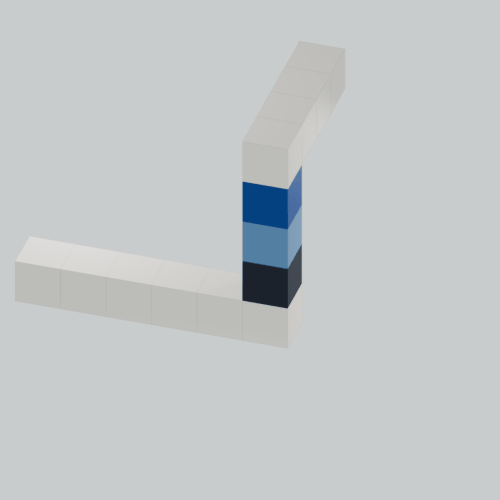

01裁縫
探す縫う測る切るほどく戻る試す選び直す針糸布ミシン手縫い型紙作り直す
雑文集 田村真夏2

だけど、ものをつくるのはとても楽しい。
わたしが毎日ものづくりを楽しむようになったのは、大人になってから。
子どものころのわたしは自分でものを作るのが苦手で、いろんな大人に矯正され、怒られ、ばかにされていた。
そこから抜け出して、自分で自分の好きなように作ることを知ってから、わたしはものづくりを楽しく感じるようになってきた。
失敗することも投げ出すことも多い。
だけど、ものをつくるのはとても楽しい。
「まえがき」より抜粋
デジタルも、アナログも、縫い物も、Web サイトも、CG も、本も作る。

| 書名 | 不完全な三角形―雑文集 田村真夏2 |
|---|---|
| 著者 | 田村真夏 |
| 判型 | B6判 |
| ページ数 | 本文122ページ（表紙を除く） |
| 初版発行日 | 2026年11月8日 |
| 紙版 | 2026年11月8日 文学フリマ東京43で頒布予定 その後は通販にて販売 |
| 通販 | 文学フリマ東京43終了後に対応予定 |
| 電子版 | 発売予定（発売日未定） |
※文学フリマ東京43の会場でご購入いただいた方には、購入者特典をプレゼントいたします。
特典の内容と受け取り方法は、決まり次第お知らせします。
紙版は文学フリマ東京43にて初披露。その後、通販や電子版も対応予定。以下は文学フリマ東京43の出展情報です。 イベント詳細については、文学フリマ東京43の開催案内（公式）・田村真夏の出店ページ もご覧ください。
| 日時 | 12:00〜17:00 |
|---|---|
| 会場 | 東京ビッグサイト 南1〜4ホール |
| ブース番号 | 南3・4ホール に-26 |
| 価格 | 決まり次第お知らせします |
| 紙版 | 文学フリマ東京43で頒布予定 |
| 電子版 | 発売予定（発売日未定） |